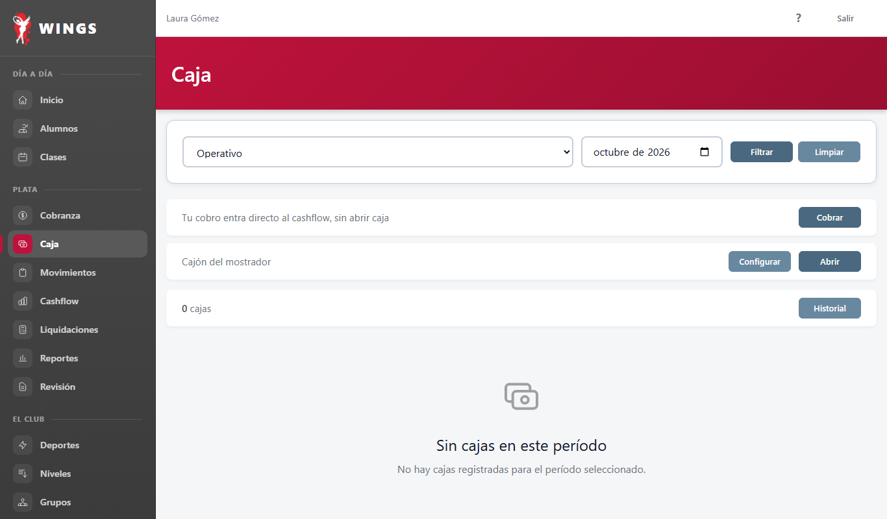
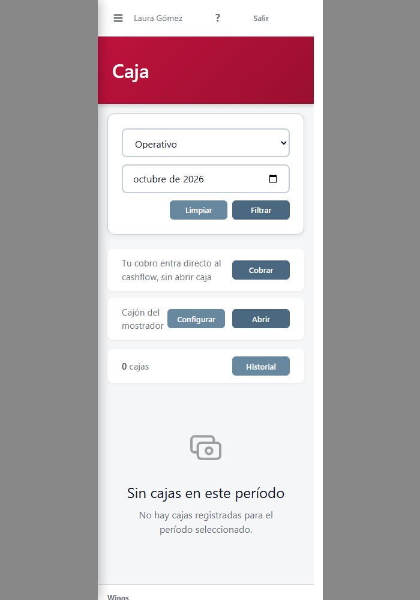
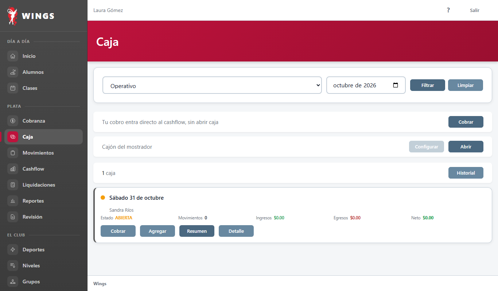
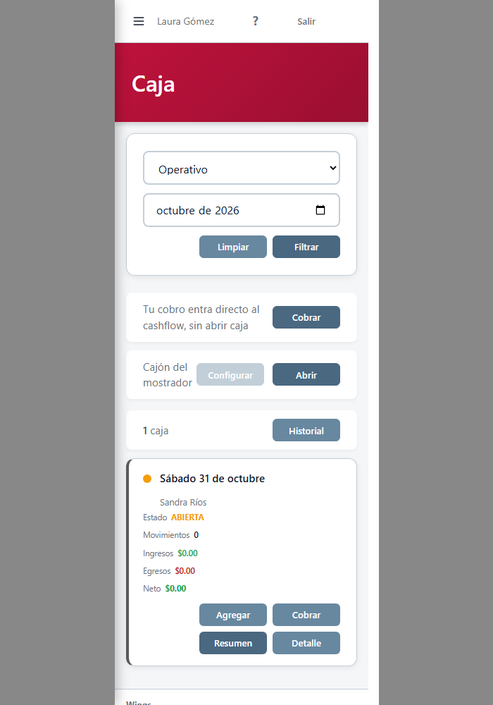
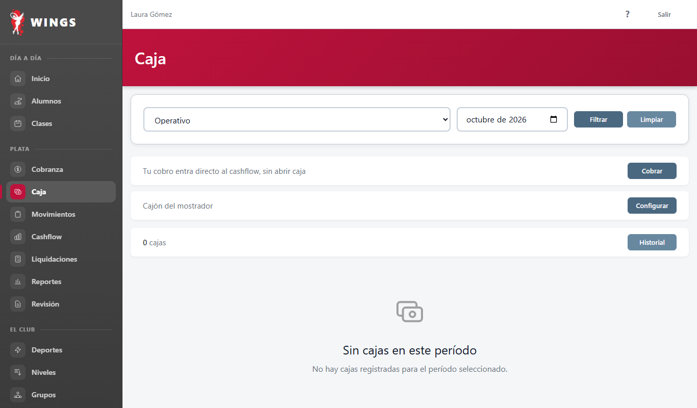
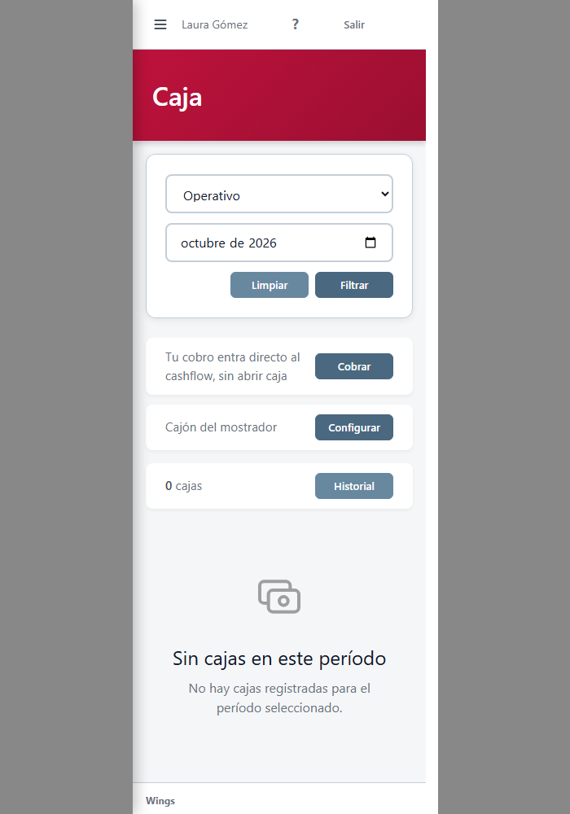

Capturas del HTML real que devuelve Wings, a 1366 y en un marco de 375. La fila que cambia es la de «Cajón del mostrador». El texto era «Cajón del mostrador: abrile la caja a un operativo».





